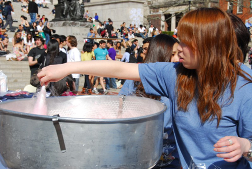

Sidelines
Come check out some traditional Japanese festival booths run by our very own CJS members and volunteers!
Arts and Crafts
Ever wanted to learn how to make origami? Maybe you would like to have your own self-decorated lantern? Look no further! Come to the Arts and Crafts booth to let your artistic side shine. Fascinated with pictorial Japanese characters? Ever want to see your name written out in Japanese? Here is your chance! Come to this booth and get a free copy for your room and more! You can also have your face painted in any design you wish! This is a great opportunity for both kids and adults alike.
Kingyo Sukui
Goldfish scooping is an Edo period tradition often seen at matsuris, and is both simple and fun to play! Using a paper scoop, try to scoop as many goldfish into your bowl as you can. Just be careful; your paper scoop gets weaker the more you dip it in the water. Scoop as many as possible, and you may win a prize at the end!
Jinja
Jinja is a Japanese word for a Shinto shrine. Matsuri are traditionally associated with the Shinto activity of enshrining a god. Today traditional matsuri are still held on shrine grounds. To experience a traditional matsuri, come to our jinja booth and participate in some shrine activities such as writing your wishes on an "ema" and receiving your fortune from a "omikuji."
Water Yo-yo Fishing
Goldfish scooping sounds fun, but I can't raise a goldfish! Well, try the less living alternative, Water Yo-yo Fishing. It's just as difficult but with much less responsibility! Plus, you can play way more with a water yo-yo than a goldfish. This booth is brought to you by Amnet.
Sweets Tables
Built up an appetite from all the exciting activities? Indulge your sweet tooth with some chocolate covered bananas, cotton candy, and snow cones.
Manga
Ever wanted to be a world-renown mangaka? Well through this big collaborative project which will last throughout the whole festival, you now can! Everyone can let their creativity loose by drawing a page following a common storyline, enabling you to hold the fate of the characters in your hands! We can't wait to see what everyone will create!